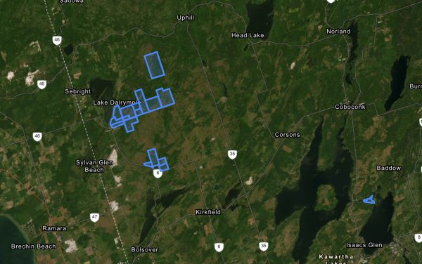

Step 1: Develop Problem Statement
Ideal
Make data accessible for all personnel within the organization, including those without extensive GIS experience.
Reality
Many people do not have a background in GIS and need user firendly maps to help them understand relevant information from the product.
Consequences
If the map is not user friendly for those without a background in GIS then decision making process can be slowed down and relevant information may be difficult for the user to access and understand.
Proposal
Create an interactive map that can be used to identify potential restoration areas. Functionality will be added to the map in the form of pop-ups that will display relevant information that can be used to help with decision making processes.
Technology Used
Leaflet, AGOL and Dashboard
